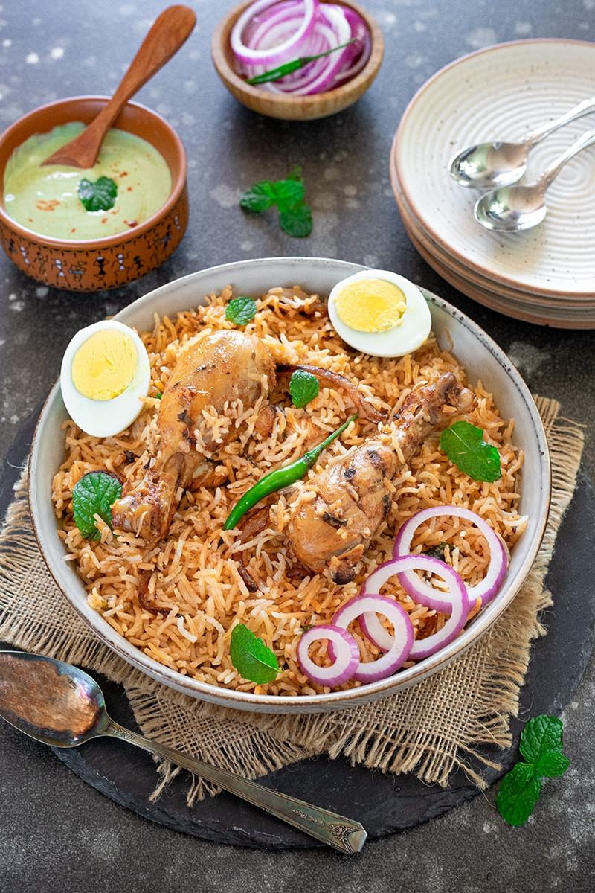

Biryani is one of the most popular rice dishes & traditionally it is cooked adapting the process of dum pukht, meaning “steam cooked over low fire”. The traditional process of Chicken Biryani starts by marinating meat in yogurt along with spices and herbs. The raw/uncooked marinated meat is layered at the bottom of a wide pot followed by another layer of par cooked basmati rice, herbs, saffron infused milk, fried onions and ghee or attar (edible essential oil).